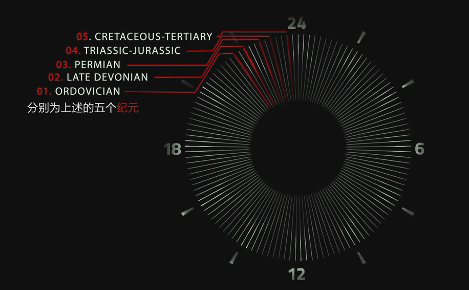

Racing Extinction
Table of Contents
1 Timeline
| 443M | Ordovician extinction |
|---|---|
| 374M | Late Devonian extinction |
| 252M | Permian extinction |
| 200M | Triassic-Jurassic extinction |
| 65M | Cretaceous-Tertiary (K.T.) extinction |

2 Quote
There's been five mass extinctions, and they've had different causes, but there's been one common factor in all - a massive increase in carbon dioxide. And we've never had a carbon-dioxide spike like what's happening now. When we put carbon dioxide into the atmosphere, it doesn't all stay there. Between a third and a half gets absorbed by the oceans. The CO2 reacts with water to form something called carbonic acid, and each year, the ocean becomes more and more acidic. A whole variety of creatures will simply dissolve into the acid ocean that we have created.
The more dependent we are on meat, milk, and eggs, the greater the CO2 and methane emissions. Cattle and brahmanas of all kind produce methane as a byproduct of breaking down grass and other things that they feed on. Methane is 22 times more potent as a climate-changing gas than is CO2, a cow can basically fill up a 55-gallon garbage bag full of methane every day. One cow's not a problem, but now we have 1.5 billion of them. And it's an incredibly inefficient way of producing food. Three-quarters of agricultural land is used just to feed livestock. When you factor in everything - the clearing of the land for grazing, feeding, and transporting - livestock causes more greenhouse gases than all the direct emissions from the entire transportation sector.
It's quite possible, if you think about it, that the baby boom generation itself is the single most impactful generation of mammals this planet has ever seen. In the anthropocene, we're changing every parameter. We're changing the geology of the planet. We're changing the chemistry of the ocean. The anthropocene means that what happens to this planet is now in our own hands.